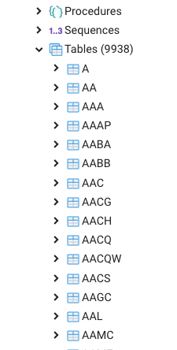
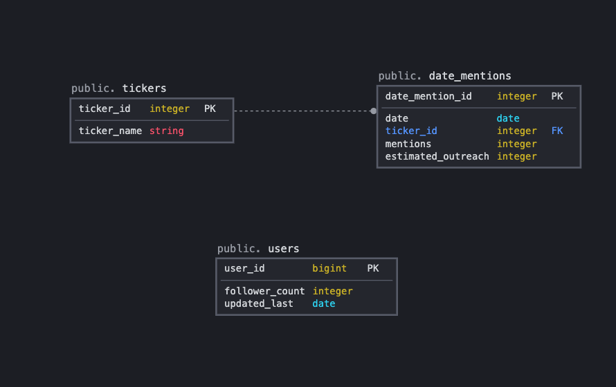
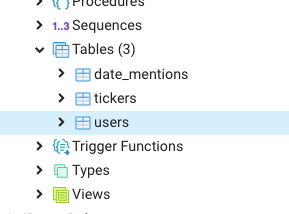
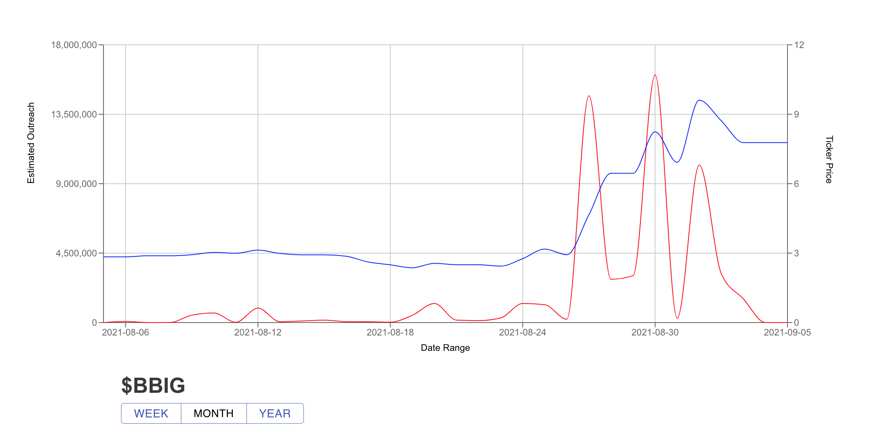

Welcome Back!
In this blog post, I’m going to lay out how I managed to build a recent project of mine where I used a Raspberry Pi to scrape data from Twitter, save it in a Postgres database, access it though a Sinatra API, and display it on a frontend React app.
There are a couple of reasons I wanted to dive into this project. For starters, I’ve always been interested in building datasets, particularly by scraping information from the internet. I’m also a little interested in market trends with tradable stocks. I’m no market analyst by any means but I do believe that investing is a great way to make your money work for you and can be a great source of extra income if done wisely.
There is a sub-community of users on Twitter that all talk about stocks which they believe will increase or decrease in value. Some of these accounts have around 100 followers or so which is a relatively small amount of outreach. Other accounts however have huge follower bases, upwards of 500,000 followers. The premise of the project is simple: Track the frequency of stock mentions by these high-profile accounts and determine which stock symbols (or “tickers”) are being talked about the most. Once that data is collected, what does it look like super-imposed over real market price data? Is there a correlation between stock value increasing or decreasing proportionally to how much the ticker is being talked about? Let’s find out!
Scraping Tweets From Twitter
It’s not terribly difficult to scrape tweets from Twitter. All you need to do is register an account with their development page and answer a few questions about your project to get access to API key credentials. It might take a day or two for them to review your application but it’s totally free and the rate-limits for accessing the API are very generous.
There are a ton of frameworks out there for accessing the twitter API depending on what language you prefer to use. In my case, I decided to write the scraper in Python, utilizing the Tweepy library.
The first step was to generate a list of users to scrape tweets from and determine the number of followers each account has. Thankfully each of these accounts is brutally honest about their advice and almost each one contains some variation of “I am not a financial advisor”, “Do your own research”, “Not liable for any losses” or “All opinions are my own” in their bio, presumably to absolve them of any fault if their advice doesn’t quite pan how they hope it will. Given this observation, it was a simple matter of writing a script that would look at a user, iterate through each of the users they follow, check their account bio for any mention of the above pattern, and append their user ID to a CSV of ID’s along with their current follower count. This process can be repeated for each new user on the list and in a short time I had over 500 very active users constantly tweeting out market predictions and forecasts to their followers.
The next step was to simply iterate over each user ID in the list and download as many tweets as the API would allow. After this is done, each tweet is parsed to determine if a ticker symbol is present in the string, usually identifiable by the “$” symbol followed by a short string of alpha characters. Each time a symbol was mentioned on a particular date, it would be appended to a nested dictionary containing the number of times a ticker was mentioned on any date. Once all the tweets have been filtered, the information is pushed to a Heroku-hosted PostgreSQL library and the process is restarted with a new user. This process can take a very long time, and I thought it would be a good use of my Raspberry Pi to do the heavy lifting as far as parsing thousands of strings. I included a small script that would send an email to my main email address each time the parsing process finished with statistics on the length of time the script took to run as well as the number of tweets downloaded. Since I have a 128gb micro-SD card for my Pi, I don’t have to worry about space requirements on a cloud hosting service.
Working with Postgres
Heroku and Postgres are a match made in heaven. It’s a simple process to access Heroku based PostgreSQL servers and insert data. My first iteration of the project was poorly designed. My idea was to create a table for each individual ticker. Each row of a table would contain a Date as the primary key along with the number of mentions that the ticker had received on that given day. This resulted in my database containing a little under 1,000 tables.

Yeesh. That’s not awesome. Not only was that a clunky way to design the database, but it was going to make defining models based on dynamic table names far more difficult down the road when working with active record and Sinatra. One of the main requirements for this project was a many-to-one relationship between data models. I had to reorder how the data was structured to make it compatible with Sinatra. I took a trip over to DB Designer and laid out what I needed my data to look like:

My plan was to use two tables to represent the parsed data, a table for tickers which contains a string of the ticker symbol and a unique ID that could be referenced by a second table called “date_mentions”. Each row in the Date Mention table would contain a date, a ticker_id, the number of mentions the ticker had received that day, and an “estimated_outreach” for that ticker on that day. “Estimated Outreach” is simply the aggregate sum of each mention multiplied by the number of followers the user who mentioned the symbol has. If a user with 10 followers tweeted a symbol 5 times, the estimated outreach would be 50. A user with 10,000,000 followers tweeting about a particular stock has a lot more weight behind it than a user with a fraction of those followers.
After a little refactoring, we arrived here. A big improvement from 1000 tables!

Sinatra And Active Record
I’m not going to pretend to be a die-hard Ruby enthusiast. If I have my choice, I’d use Python or JavaScript before getting my hands dirty in Ruby, but credit where credit is due, Active Record and Sinatra are very useful Ruby libraries. All I had to do to get a working model of my data was define two classes: A Ticker class and a Date Mention class.
A ticker has many date mentions and a date mention belongs to a ticker. Simple as that.
With those definitions done, I could simply call a Ticker instance and retrieve all the corresponding data for a given date for a given ticker. The difficult part was designing the API to give useful information in JSON format, but even that was relatively straight-forward once it became clear what kind of data was required for the front end.
Graphing Market Data
In my Sales Console project, I utilized the react library Recharts which allowed for quick and fully customizable graphing. Because I knew how easy it was to work with, I decided to go with recharts again for this project and it held up extremely well.

I used a free finance API to call data for the last year on any given symbol entered and saved it to a master state. When the date range is changed, that data is reordered to fit the date range instead of a new back-end call occurring. This decreases load time and helps ease the rate limit requirements on the back end. The biaxial line chart was impressive, and it was a straight-forward process to customize the different aspects of the graph.
If you’d like to visit the site, you can check it out here
As of this posting, my Raspberry Pi is still working away keeping this information up to date. As for conclusions to be drawn from the data, it’s difficult to say. There are certain instances where it looks like correlations arise but it’s say if market changes cause people to talk or if people talking causes market changes to occur.
I’ll leave it to the financial analysts to decide, I just had fun making the project.
If you’d like to check out the code behind this project, you can find the GitHub repos for each corresponding part of the project here
Like usual if you have any questions I’m more than happy to chat.
Thanks for stopping by!
Trace